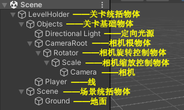
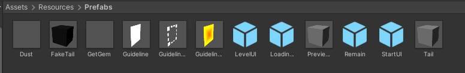

冰焰模板 V4.7.6 使用手册¶
- 本页面将会介绍模板的使用方法。Unity基本操作本页面不予讲解，如遇问题请自行查询和解决。本教程适用于最新版模板
- 完全理解本教程需要掌握一些基本的Unity操作。如对Unity的基本操作尚不熟悉，建议熟悉后再阅读本教程
一、预设场景进入方法¶
打开模板后，并不会直接进入预设场景。需进入Assets/#Template/[Scenes]路径下找到Scene场景文件，双击进入预设场景

二、预设场景物件介绍¶
物件结构¶

- LevelHolder：关卡统括物体 - 关卡内等级最高的父物体，所有物体都为其子物体
- - Objects：关卡基础物体 - 包含关卡内的基本要素，如光源、相机和线
- -- Directional Light：定向光源 - 关卡内最基本的光源
- -- CameraRoot：相机根物体 - 控制相机跟随线运动
- --- Rotator：相机旋转控制物体 - 控制相机旋转
- ---- Scale：相机缩放控制物体 - 控制相机缩放
- ----- Camera：相机
- -- Player：线
- - Scene：场景统括物体 - 关卡内所有场景都放在此物体之下
- -- Ground：地面
注：如无特别需求，除地面外其他物体不可随意删除
特别说明¶
在 Scene 物体上，有已经放好的 Playable Director 和 Time Scale
Playable Director¶
此为场景的时间线

Time Scale¶
用于更改播放的倍速
- Key：启用和禁用倍速播放的按键
- Value：加速倍速。默认为1.5，最低为0，最高为3
注：此代码仅在编辑器内可用
三、预制物体介绍¶
Assets/#Template下¶
- [Animators]：用于存放帧动画的文件夹
- [Materials]：用于存放材质的文件夹
- [Meshes]：用于存放模型的文件夹
- [Music]：用于存放音乐的文件夹
- [Scenes]：用于存放场景的文件夹
- [Textures]：用于存放贴图的文件夹
- [Timelines]：用于存放时间线的文件夹
- Checkpoint：检查点
- FakePlayer：假线
- Gem：收集物
- Ground：地面
- Obstacle：障碍物
- Percentage：百分比
- Pyramid：金字塔
- TrailPredictor：下落与跳跃轨迹预测器
- Trigger：触发器
Assets/Resources/Prefabs下¶

- Dust：线落地粒子效果
- FakeTail：假线线身
- GetGem：收集物获取粒子效果
- Guideline：引导线
- GuidelineTap：引导线点击框
- GuidelineTapEffect：引导线触发效果物体
- LevelUI：关卡UI
- LoadingUI：加载UI
- PreviewCameraHolder：跟随相机预览物体
- Remain：线死亡效果物体
- StartUI：关卡开始前UI
- Tail：真线线身
注：上述物体均不可随意删除。导入音乐、创建材质或帧动画等时，建议放进相应文件夹中
四、关卡初设置¶
在开始制作关卡前，需设置好关卡的一些基本信息。 关卡信息文件为Assets/#Template/[Scenes]下的SceneData
- Level Title：关卡名
- Sound Track：关卡音乐
- Speed：线速。默认为12
- Block Limit：收集物总数。默认为10
- Time Scale：时间倍速。默认为1
- Gravity：场景重力。默认为-9.3
- Colors：材质颜色预设。如果关卡内存在材质颜色改变，需在此设置材质的初始颜色。 Material 为需要初始化颜色的材质， Color 为常规颜色， Emission Color 为发光颜色
关卡基本信息设置好后，需在 Player 上的代码的 Level Data 中选择设置好的关卡信息文件
关卡信息文件也可以通过Project窗口右键→Create→Dancing Line Fanmade→Level Data来创建
五、初识线与跟随相机¶
线¶
面板数据¶
- Level Data：关卡信息文件
- Scene Camera：相机
- Scene Light：定向光源
- Character Material：线使用的材质
- Character Rigidbody：线的刚体
- Character Collider：线的碰撞
- Start Position：线的初始位置
- First Direction：线的第一朝向
- Second Direction：线的第二朝向
- Pool Size：线身对象池上限
- Played Animators：线开始移动时要启动的帧动画
- Played Timelines：线开始移动时要启动的时间线
- Allow Turn：是否允许通过点击来转向
- No Death：是否启用线不死亡
- Draw Direction：勾选后会在线的位置绘制出0、90、180、270四个方向的箭头
- Video Quality Level：默认画质等级。数值代表是第几个画质。如需应用设置的第n个画质，则此处需填写的数值为n-1，其他数值为最低画质
- Anti Aliasing Level：默认抗锯齿等级。0为禁用，1为2X MSAA，2为4X MSAA，3为8X MSAA，其他数值为禁用
- Shadow：默认是否启用阴影状态
在启动播放时，线会自动移动至初始位置，即 Start Position 。如需更改线的初始位置，可手动修改 Start Position 的数值，或点击面板上的 Get Start Position 按钮自动获取位置
快捷键¶
快捷键可在播放场景时使用
- R键：立刻重新加载当前关卡
- C键：在控制台输出当前音乐时间
- K键：立刻杀死线
注：快捷键仅在编辑器内可用。C键与K键仅在线开始移动后可用
事件¶
事件仅在特定条件下触发，可用于实现特定效果。事件控制代码也在线上


- On Game Awake ()：在场景播放时调用
- On Player Start ()：在线开始移动时调用
- On Change Direction ()：在线转向时调用
- On Leave Ground ()：在线离开地面时调用
- On Touch Ground ()：在线触碰地面时调用
- On Game Over ()：在线死亡时调用
- On Get Gem ()：在线拾取收集物时调用
- On Player Jump ()：在线跳跃时调用
跟随相机¶

- Target：跟随目标物体。即线
- Rotator：相机旋转控制器物体
- Scale：相机缩放控制物体
- Default Offset：相机初始偏移
- Default Rotation：相机初始旋转角度
- Default Scale：相机初始缩放
- Follow：是否启用跟随
- Smooth：是否启用平滑跟随
在启动播放时，相机的偏移、旋转角度和缩放会自动更改为 Default Offset 、 Default Rotation 和 Default Scale 。因此需提前设置好这三个数据
六、引导线的使用¶
铺设引导线¶
方法一：导入osu!谱面生成¶
先从osu!中导出你制作的谱面，将导出的.osz文件的后缀名更改为.zip，然后解压并得到.osu文件。接着将.osu文件的后缀名改为.txt，并导入工程

成功导入后，将其拖入位于 LevelHolder 上的 Beatmap Reader 的 Beatmap 中
之后，点击 Create Guideline Taps By Beatmap 按钮即可生成引导线。实际生成可能存在误差，可通过修改Offset参数解决问题
如谱面数据有所更改，可点击 Reload Hit Time 重新加载
方法二：手动铺设引导线¶
在场景内任意物体上添加代码 Guideline Tap Generator 代码，播放场景，即可在点击时生成引导线。完成后，复制引导线的父物体，结束播放，再粘贴即可

注：铺设完成后需禁用或移除代码
启用引导线¶
铺设完成后，在 LevelHolder 上的 Guideline Manager 的 Guideline Tap Holder 中，选择引导线的父物体
选择后，启动播放，即可看到画面左侧出现了开启引导线的按钮。点击即可启用引导线

启用自动播放¶
在 Guideline Manager 上，勾选 Autoplay 即可启用自动播放

注：启用自动播放后，线将无法通过点击转弯。且引导线也不会被触发
其他参数的使用¶
- Colors：引导线颜色预设。可自行添加新的颜色预设
- Line Gap：线与框间的距离。默认为0.2，可自行按需修改
- Autoplay Trigger Size：自动播放的触发器大小。如因引导线框过于密集而导致无法正常工作，可适当调小

引导线框物体上有 Guideline Tap 代码。代码上的 Color Index 为此引导线框所采用的颜色预设，数值代表是第几个预设。 如需应用 Guideline Manager 上的第n个预设颜色，则此处需填写的数值为n-1
代码上的 Have Line 表示此引导线框与下一个引导线框之间是否生成线段来连接。勾选则生成，反之不生成
注：代码上其他参数请勿随意更改
七、路径的生成¶
方法一：根据引导线生成路径¶
设置好引导线后，可在 Guideline Manager 的 Road Generator Setting 下生成路径

- Road Prefab：路径物体
- Width：路径宽度
- Offset：路径偏移
设置好上述三处数据后，点击 Create Road By Guideline Taps 即可生成路径
方法二：手动铺设路径¶
在场景内任意物体上添加代码 Road Generator 代码，播放场景，即可跟随线生成路径。完成后，复制路径的父物体，结束播放，再粘贴即可
- Road Prefab：路径物体
- Road Width：路径宽度
- Road Height：路径高度
注：铺设完成后需禁用或移除代码
八、调试功能的使用¶
模板提供调试功能。调试功能仅在编辑器内可用
路径高亮和点击时间显示¶
此代码位于 LevelHolder 。此功能依赖于引导线

- Controller：引导线控制器。即 Guideline Manager
- Max Distance：路径高亮与时间显示的最远可见距离
- Trail Color：路径高亮的颜色
- Trail Offset：路径高亮偏移
- Render Trail：是否启用路径高亮
- Render Time：是否启用点击次数和点击时间显示
如引导线相关数据有所更改，可点击 Reload Trail Data 重新加载
信息显示¶
此代码位于 LevelHolder

- Display：是否显示调试信息
- Key：显示和关闭调试信息的按键
- Size：调试信息字体大小
- Space：两行调试信息间的距离
- Font：调试信息字体
- Rect：调试信息位置
- Information：显示的调试信息。可自行增添或减少

当前版本模板支持的调试信息如下：
| 名称 | 内容 | 名称 | 内容 |
|---|---|---|---|
| Game State | 游戏状态 | Progress | 进度 |
| Audio Time | 音乐时间 | Audio Time Formatted | 格式化音乐时间 |
| Player Position | 线的位置 | Player Local Position | 线的相对位置 |
| Player Rotation | 线的旋转角度 | Player Local Rotation | 线的相对旋转角度 |
| Player Speed | 线的速度 | Block Count | 已获取收集物数量 |
| Checkpoint Count | 已激活检查点数量 | Gravity | 重力 |
| Camera Follower Offset | 跟随相机偏移 | Camera Follower Rotation | 跟随相机旋转角度 |
| Camera Follower Real Rotation | 跟随相机真实旋转角度 | Camera Follower Scale | 跟随相机缩放 |
| Camera Position | 相机位置 | Camera Local Position | 相机相对位置 |
| Camera Rotation | 相机旋转角度 | Camera Local Rotation | 相机相对旋转角度 |
| Camera Fov | 相机视场 | Fog Mode | 雾气模式 |
| Fog Start | 雾气开始距离 | Fog End | 雾气最远距离 |
| Fog Density | 雾气密度 | Light Rotation | 定向光源旋转角度 |
| Light Local Rotation | 定向光源相对旋转角度 | Light Intensity | 定向光源强度 |
| Light Shadow Strength | 定向光源阴影强度 | Ambient Lighting Type | 环境光源类型 |
| Ambient Intensity | 环境光源强度 | Video Quality | 画质等级 |
| Anti Aliasing | 抗锯齿等级 | Shadow | 阴影状态 |
线下落与跳跃轨迹预测¶
下落与跳跃轨迹预测器，即 TrailPredictor ，从Project窗口拖出即可使用。使用时，将其放置于线下落或起跳的位置，调整相关数据，即可使用
- Resolution：轨迹绘制精度
- Render Distance：绘制距离
- Trail Color：轨迹绘制颜色
- Hit Color：落点绘制颜色
- Horizontal Speed：线的速度
- Vertical Impulse：使线跳跃的冲量大小。为0时即为下落轨迹预测
注：使用时建议将标记位置的薄片放在线离开地面处或紧贴跳跃触发器以减少误差。由于线的碰撞体积、电脑性能、操作帧率等多种因素影响，预测落点可能与实际落点位置存在微小误差
九、收集物、检查点与金字塔¶
收集物¶
收集物，即 Gem ，从Project窗口拖出即可使用。使用时，将其放置在线所经过的路上即可

收集物代码面板上有以下设置可供更改：

- Gem Mesh：收集物模型
- Effect Path：收集物获取效果的路径。此路径在
Assets/Resources下 - Fake：是否为假收集物。若勾选，则线无法获取
检查点¶
检查点，即 Checkpoint ，从Project窗口拖出即可使用。使用时，将其放置在线所经过的路上即可

放置检查点时，检查点触发器、复活位置和检查点标识物体的位置可以自行更改
- RevivePosition：复活位置
- Rotator：检查点标识物体
- CheckpointTrigger：检查点触发器
检查点代码面板上有以下设置可供更改：


- Direction：线复活后的朝向。与线代码面板上的 First Direction 和 Second Direction 相同
- Soundtrack Time：音频时间
- Offset：相机偏移
- Rotation：相机旋转角度
- Scale：相机缩放
- Fov：相机视场
- Follow：相机是否跟随线
- Use Fog：是否启用雾气
- Fog Color：雾气颜色
- Start：雾气开始距离
- End：雾气最远距离
- Rotation：定向光源旋转角度
- Color：定向光源颜色
- Intensity：定向光源强度
- Shadow Strength：定向光源阴影强度
- Lighting Type：环境光源类型
- Material Colors Auto：自动记录颜色的材质。需手动添加需要记录的材质
- Material Colors Manual：手动记录颜色的材质
- Image Colors Auto：自动记录颜色的Image。需手动添加需要记录的Image
- Image Colors Manual：手动记录颜色的Image
- On Revive ()：事件。在复活时调用
除 Direction 、 Material Colors Manual 和 Image Colors Manual 外，其余数据在检查点激活时会自动记录。如要手动记录或自动记录会导致一些问题，可勾选手动记录
金字塔¶
金字塔，即 Pyramid ，从Project窗口拖出即可使用。使用时，将其放置在关卡结尾即可

金字塔共包含4个触发器，分别有如下功能：
- 1号触发器：打开金字塔
- 2号触发器：停止相机跟随，阻止线通过点击来转向。此触发器代码面板上有 Change Direction 选项，若勾选，则线会在触碰此触发器时转向指定的方向。若不勾选，则线不会转向

- 3号触发器：启动关卡结束倒计时
- 4号触发器：使线停止移动
关卡结束倒计时位于金字塔代码面板上，可根据实际情况自行修改时间

可根据关卡实际情况自行调整4个触发器的位置
十、触发器的使用¶
触发器，即 Trigger ，从Project窗口拖出即可使用。使用时，将其放置在线所经过的路上即可

更改触发器颜色¶
触发器面板上有 Trigger Renderer 代码，有以下设置可供更改：
- Box Color：触发器盒体颜色
- Wire Color：触发器边框颜色
添加代码¶
在触发器面板下，有 Add Component 按钮，点击并搜索要添加的代码，然后点击目标代码，即可添加
注：触发器面板上的其他组件无需修改
十一、相机代码的使用与时间动画的制作¶
使用相机代码¶
视角变换¶
在触发器上添加 Camera Trigger 代码，并根据实际需求修改代码上的设置：

- On Finished ()：事件。在视角变换完成时调用
- Offset：新的相机偏移
- Rotation：新的相机旋转角度
- Scale：新的相机缩放
- Field Of View：新的相机视场
- Follow：是否启用跟随
- Duration：变换所需时间
- Ease：变换所使用的缓动函数
- Use Curve：是否使用动画曲线（勾选后将不再使用缓动函数）
- Curve：动画曲线
- Mode：旋转模式
- Can Be Triggered：是否可使用触发器触发
此代码既可以使用触发器触发，也可以使用事件触发
视角变换预览¶
点击代码面板上的 Create Preview，可在触发器的位置生成预览。预览的角度会随代码上设置的改变而改变

注：预览结束后建议点击Destroy Preview将其删除，避免后续出现其他问题
震动¶
在触发器上添加 Camera Shake Trigger 代码，并根据实际需求修改代码上的设置：

- Power：震动力度
- Duration：震动持续时间
时间动画用法通则¶
类型一¶
此类型包括物体的位移、旋转和缩放时间动画

- On Animator Start ()：事件。在动画开始时调用
- On Animator Finished ()：事件。在动画完成时调用
- Transform Type：赋值类型。New表示赋予新值，Add表示在当前值上添加
- Triggered By Time：是否使用时间触发
- Trigger Time：触发动画的等待时间
- Duration：动画持续时间
- Offset Time：是否启用时间偏移。若勾选，则动画将提前 Duration 秒启动
- Dont Revive：是否取消恢复此动画
- Ease：动画所使用的缓动函数
- Curve：动画曲线
- Use Curve：是否使用动画曲线（勾选后将不再使用缓动函数）
此动画既可以使用时间触发，也可以使用事件触发
类型二¶
此类型包括雾气、定向光源、环境光源、材质颜色和Image颜色时间动画

- On Animator Start ()：事件。在动画开始时调用
- On Animator Finished ()：事件。在动画完成时调用
- Trigger Time：触发动画的等待时间
- Duration：动画持续时间
- Offset Time：是否启用时间偏移。若勾选，则动画将提前 Duration 秒启动
- Dont Revive：是否取消恢复此动画
- Ease：动画所使用的缓动函数
- Curve：动画曲线
- Use Curve：是否使用动画曲线（勾选后将不再使用缓动函数）
物体时间动画¶
位移¶
用于改变物体的位置
在需要添加动画的物体上添加 Local Pos Animator 代码
- Original Transform：物体初始位置
- Position：物体目标位置
- Get original position：获取物体初始位置
- Set as original position：将物体移动至初始位置
- Get new position：获取物体目标位置
- Set as new position：将物体移动至目标位置
在启动播放时，物体的位置会自动更改为 Original Transform
旋转¶
用于改变物体的旋转角度
在需要添加动画的物体上添加 Local Rot Animator 代码
- Original Transform：物体初始旋转角度
- Rotation：物体目标旋转角度
- Rotate Mode：旋转模式
- Get original rotation：获取物体初始旋转角度
- Set as original rotation：将物体旋转至初始旋转角度
在启动播放时，物体的旋转角度会自动更改为 Original Transform
缩放¶
用于改变物体的缩放
在需要添加动画的物体上添加 Local Scale Animator 代码
- Original Transform：物体初始缩放
- Scale：物体目标缩放
- Get original scale：获取物体初始缩放
- Set as original scale：将物体缩放至初始缩放
- Get new scale：获取物体目标缩放
- Set as new scale：将物体缩放至目标缩放
在启动播放时，物体的缩放会自动更改为 Original Transform
雾气时间动画¶
用于改变雾气相关设置
在任意物体上添加 Timer Fog 代码

- Use Fog：是否启用雾气
- Fog Color：雾气颜色
- Start：雾气开始距离
- End：雾气最远距离
定向光源时间动画¶
用于改变定向光源相关设置
在任意物体上添加 Timer Light 代码

- Rotation：定向光源旋转角度
- Color：定向光源颜色
- Intensity：定向光源强度
- Shadow Strength：定向光源阴影强度
环境光源时间动画¶
用于改变环境光源相关设置
在任意物体上添加 Timer Ambient 代码
- Lighting Type：环境光源类型
材质颜色时间动画¶
用于改变材质颜色
在任意物体上添加 Timer Material Color 代码

- Material：需要改变颜色的材质
- Color：常规颜色
- Emission Color：发光颜色
可点击右上角的加号添加材质
Image颜色时间动画¶
用于改变Image颜色
在任意物体上添加 Timer Image Color 代码

- Image：需要改变颜色的Image
- Color：目标颜色
可点击右上角的加号添加Image
十二、触发器代码的使用¶
注：除非特别说明，否则下述代码均在线触碰触发器时触发
Change Direction¶
用于更改线的转弯方向和自动点击
更改线的转弯方向¶
当 Type 为 Direction 时，代码功能为更改线的转弯方向。此时，会在触发器的位置绘制出0、90、180、270四个方向的箭头


- First Direction：新的第一朝向
- Second Direction：新的第二朝向
- Set Camera Coordinate：是否更改跟随相机的坐标系。若不勾选，线以新的朝向转向时，相机可能不能正常跟随
自动点击¶
当 Type 为 Turn 时，代码功能为更改线的转弯方向

Event Trigger¶
用于调用事件

- Invoke On Awake：是否在启动场景播放时调用事件
- Invoke On Click：是否当线在触发器内转向时调用事件。若不勾选，则在线触碰触发器时调用事件
- On Trigger Enter ()：事件
Gravity Trigger¶
用于更改场景重力

- Gravity：新的重力
Jump¶
用于使线跳跃
- Impulse：使线跳跃的竖直方向的冲量
- Change Direction：是否使线在起跳的瞬间转向
Kill Player¶
用于实现落水和出图的死亡方式

- Reason：死亡原因。 Hit 为撞墙死亡， Drowned 为落水死亡， Border 为出图死亡
Play Animator¶
用于播放帧动画

- Animator：需要播放的帧动画
- Dont Revive：是否取消恢复此帧动画
可点击右上角的加号添加帧动画
Play Audio Clip¶
用于播放音频

- Clip：需要播放的音频
- Volume：播放音量
- Triggered By Trigger：是否可使用触发器触发
此代码既可以使用触发器触发，也可以使用事件触发
Set Active¶
用于开启和关闭物体

- Active On Awake：是否在启动场景播放时触发
- Target：目标物体
- Active：是否开启物体
- Dont Revive：是否取消恢复此物体
可点击右上角的加号添加物体
Set Ambient¶
用于更改环境光源相关设置。用法与 Timer Ambient 相同
Set Fog¶
用于更改雾气相关设置。用法与 Timer Fog 相同
Set Image Color¶
用于更改Image颜色。用法与 Timer Image Color 相同
Set Light¶
用于更改定向光源相关设置。用法与 Timer Light 相同
Set Material Color¶
用于更改材质颜色。用法与 Timer Material Color 相同
Speed¶
用于更改线或假线的速度
- Set Fake Player：是否更改假线的速度
- Player：目标假线
- Speed：新的速度
Teleport¶
用于传送线


- Type：传送模式。 Target 表示传送到目标物体的位置， Position 表示传送到目标位置
- Target：目标物体
- Position：目标位置
- Force Camera Follow：是否强制相机跟随。若不勾选，则相机会平滑移动至线传送后的位置
- Turn：是否使线在传送后立刻转向。若勾选，则可选择转向的朝向

设置好目标物体或目标位置后，触发器和目标位置间会出现红色连线，目标位置会出现白色立方体边框和使线传送到此处的触发器的名字

十三、假线的使用¶
假线，即 FakePlayer ，从Project窗口拖出即可使用
初识假线¶

- Speed：假线线速。默认为12
- Character Material：假线使用的材质
- Start Position：假线的初始位置
- First Direction：假线的第一朝向
- Second Direction：假线的第二朝向
- Pool Size：假线线身对象池上限
- Is Wall：是否为墙体。若勾选，真线触碰假线线身时会撞死
- Draw Direction：勾选后会在假线的位置绘制出0、90、180、270四个方向的箭头
- Create Turn Trigger：是否生成转向触发器
- Synchronism With Player：是否与真线同步转向
- Create Key：生成转向触发器的按键
- Trigger Rotation：转向触发器的旋转角度
- Trigger Scale：转向触发器的缩放
在启动播放时，假线会自动移动至初始位置，即 Start Position 。如需更改假线的初始位置，可手动修改 Start Position 的数值，或点击面板上的 Get Start Position 按钮自动获取位置
转向触发器生成完成后，复制转向触发器的父物体，结束播放，再粘贴即可
按下 Create Key 时，假线会转向，并在原地生成转向触发器。若勾选 Synchronism With Player ，假线会在真线转向时转向，并在原地 生成转向触发器。 Synchronism With Player 勾选后，将无法再通过按下 Create Key 使假线转向和生成转向触发器
使用假线¶
在触发器上添加 Fake Player Trigger 代码，并根据实际需求修改代码上的设置：


- Target Player：目标假线
- Type：触发器模式
触发器模式为Turn时¶
用于使假线转向
触发器模式为Change Direction时¶
用于改变假线的转向方向
- First Direction：新的第一朝向
- Second Direction：新的第二朝向
触发器模式为Set State时¶
用于开始和停止假线的移动
- State：新的状态。 Moving 会使假线开始移动， Stopped 会使假线停止移动
注：假线离开相机视野后，建议及时停止假线的移动
十四、其他¶
百分比的使用¶
百分比，即 Percentage ，从Project窗口拖出即可使用

百分比面板上有 Percentage 代码：
- Percentage：需要显示的百分比。包括从10%到90%
- Color：百分比颜色
注：百分比面板上的其他组件无需修改
添加新画质¶
可在Project Settings→Quality下添加新画质
点击 Add Quality Level 按钮即可添加新画质
添加新画质后，修改 Current Active Quality Level 的 Name ，设置画质名称。向下滚动，画质的其他设置可自行更改
新画质设置完成后，进入Assets/Resources/Prefabs下的StartUI预制体，在左侧Hierarchy窗口找到 Controller 物体

在此物体的面板上有 Set Game Quality 代码。在 Quality Names 中添加新画质的名字

注：代码上其他设置请勿随意更改
添加完成后，退出预制体编辑界面，启动播放，更改画质，即可看到新添加的画质

材质创建建议¶
创建普通材质时，使用Dancing Line Fanmade/Standard/Color Shader
创建透明材质时，使用Dancing Line Fanmade/Standard/Transparent Shader
模板使用手册入口¶
单击菜单栏上 Template 选项，然后点击 Tutorial 选项，即可打开当前教程页面
教程至此结束